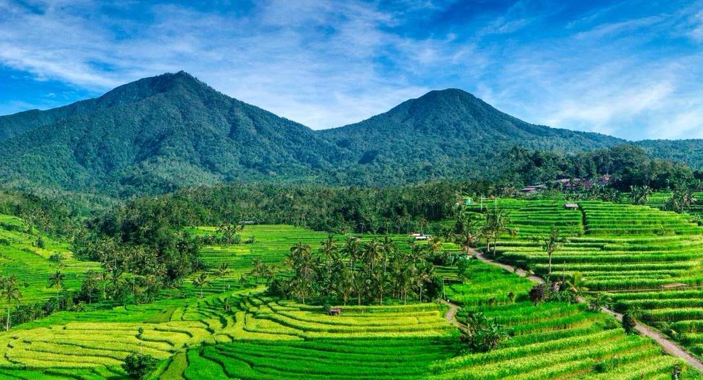
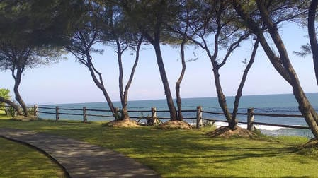

Enam tempat yang akan
membuat kamu jatuh cinta
Dari terasiring sawah UNESCO hingga pantai sunyi yang tersembunyi di balik tebing — Tabanan menyimpan keajaiban di setiap tikungannya.

Jatiluwih Rice
Terraces
Hamparan terasiring sawah seluas 656 hektare yang telah diakui UNESCO sejak 2012. Sistem irigasi subak yang diwariskan sejak abad ke-11 ini adalah simbol harmoni antara manusia, alam, dan Tuhan dalam filosofi Tri Hita Karana.

Pantai Kutikan
Pantai berombak besar favorit para peselancar dunia. Suasana tenang, minim keramaian, dan sunset dramatis di balik muara sungai yang membelah pasir hitam vulkanik.

Pantai Bonian
Pantai dengan pemandangan ombak dan perpaduan terumbu karang yang indah

Pengempu Waterfall
Air terjun bertingkat yang tersembunyi di tengah hutan lebat Tabanan. Trek 45 menit melewati sungai kecil dan sawah — pengalaman offtrack yang memanjakan jiwa petualang sejati.

Kebun Raya Bedugul
Kebun raya seluas 157,5 hektare di ketinggian 1.250 mdpl dengan koleksi lebih dari 2.000 spesies tanaman tropis. Udara sejuk, kabut pagi, dan danau yang memukau mengelilingi tempat ini.

Bendungan Yeh Aya Hulu
Tempat rekreasi alam menyusuri sungai dengan pelampung dan menikmati pegunungan serta pemandangan sawah.